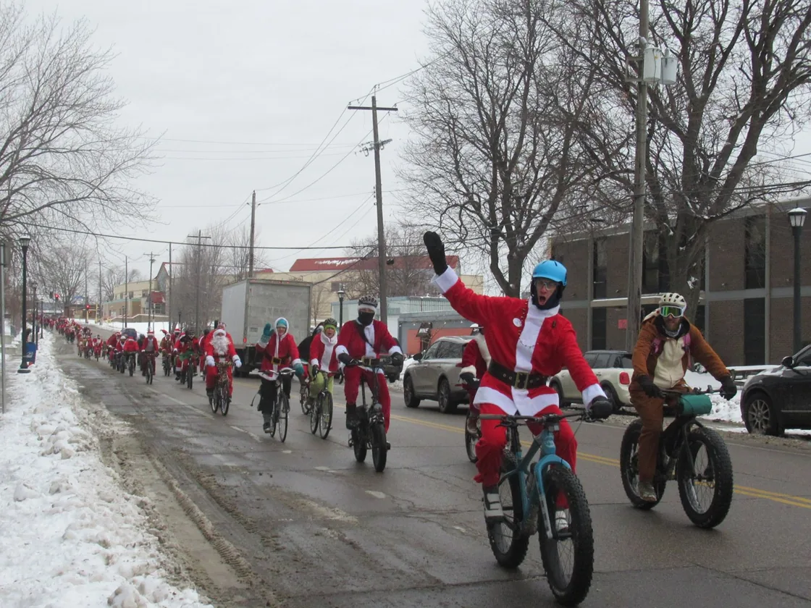
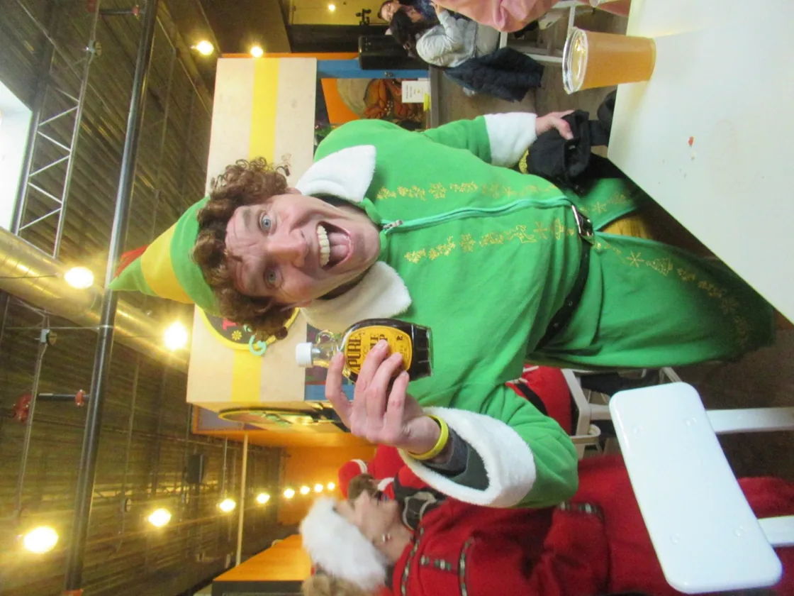
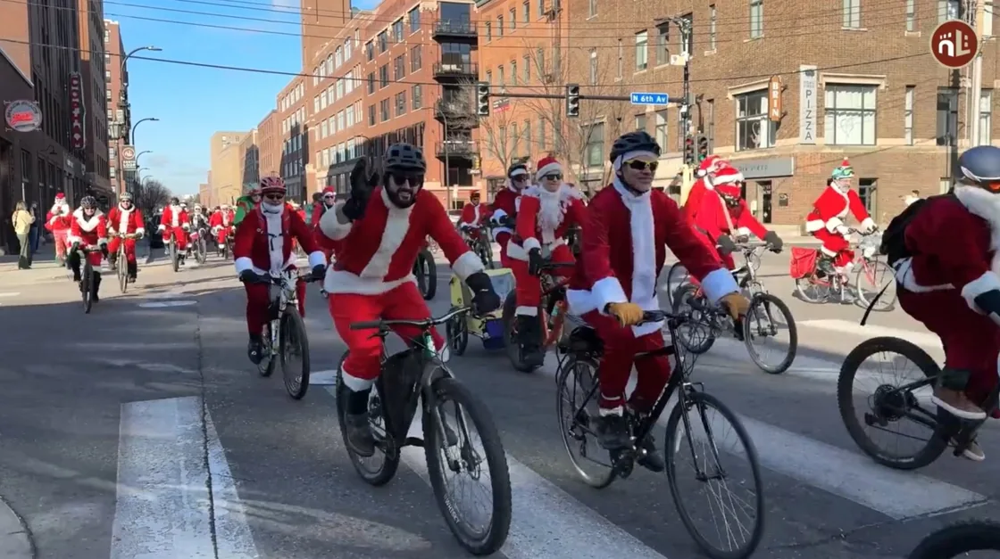
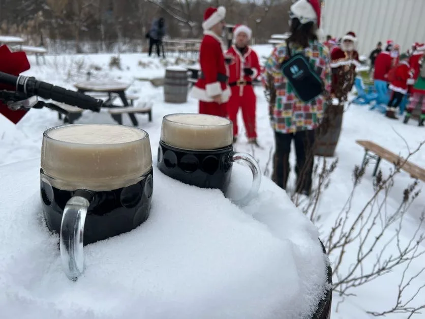
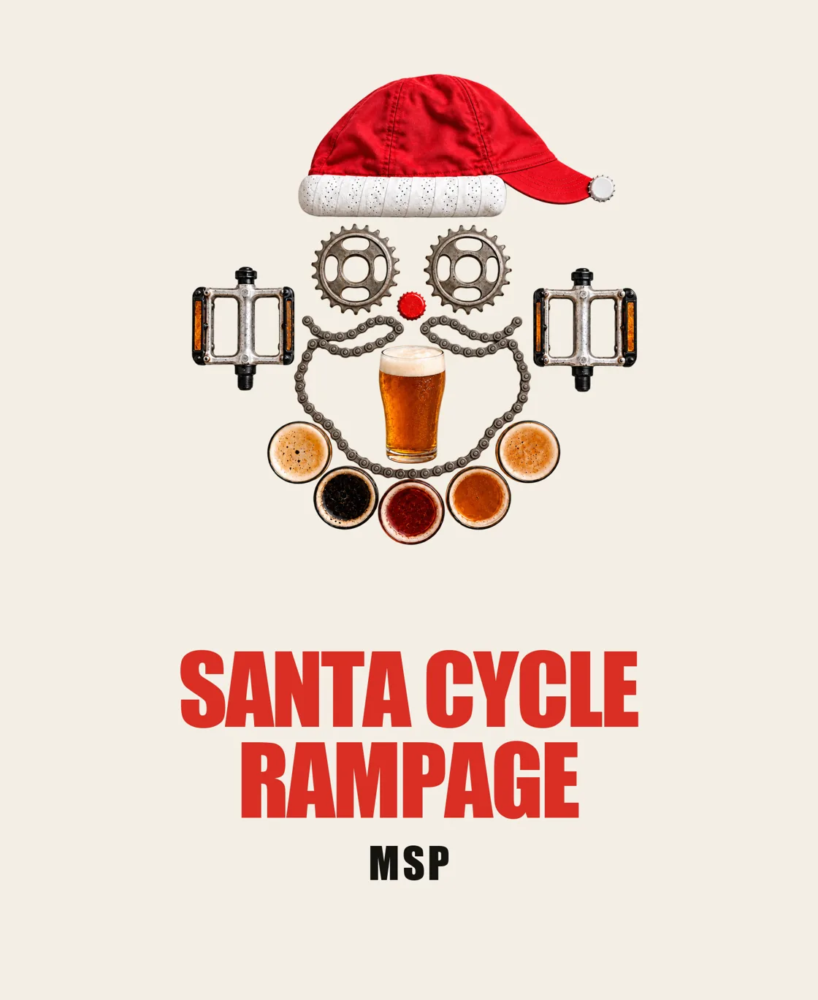

FOX 9 · 2025
Trading their sleighs for bikes
News coverage of the Minneapolis ride.
Saturday, December 5, 2026 · Minneapolis
10 AM breakfast meetup · The Loop
Free · No registration
Santa suits, decorated bikes, local breweries, toys for kids, and a little unexpected kindness.
Ride departure time to be announced.

The 10 AM gathering is for breakfast. Ride departure time is still to be confirmed. Brewery stops will be announced in early November, with approximate arrival and departure times to follow. The toy collection stop will be confirmed with the schedule.
Twin Cities Santa Cycle Rampage is a free annual holiday bicycle ride through Minneapolis. Started in 2013 with ten friends, the ride drew 178 participants in 2025. Riders dress like Santa, decorate their bikes, visit local breweries, and carry new, unwrapped toys to donate to the Salvation Army.
Photos are available for editorial coverage of Santa Cycle Rampage MSP. No advance approval is needed. Please use the photographer credit shown, or credit Santa Cycle Rampage MSP where no photographer is named. The ZIP includes additional images shown under “More photos.”
A Santa waves from the riding pack during the 2025 Twin Cities Santa Cycle Rampage in Minneapolis.
2592 × 1944 JPG originalPhoto: Lisa DustDownload original ↓Editorial use with photographer creditHoliday-decorated bicycles at the 2025 Twin Cities Santa Cycle Rampage in Minneapolis.
4032 × 3024 JPG originalPhoto: Sarah MayerDownload original ↓Editorial use with photographer creditRiders in Santa, elf, reindeer and other holiday costumes gather during the 2025 Twin Cities Santa Cycle Rampage.
4032 × 3024 JPG originalPhoto: Kara JacobsenDownload original ↓Editorial use with photographer credit
A rider dressed as Buddy the Elf holds maple syrup at a brewery during the 2025 Twin Cities Santa Cycle Rampage.
1944 × 2592 JPG originalPhoto: Lisa DustDownload original ↓Editorial use with photographer credit
Santa Cycle Rampage riders gather outdoors in Minneapolis.
2048 × 1536 JPGSource: Santa Cycle Rampage MSP collectionDownload photo ↓Credit: Santa Cycle Rampage MSP
Santa and elf cyclists ride past a Prince mural in Minneapolis.
1800 × 1198 JPGSource: Santa Cycle Rampage MSP collectionDownload photo ↓Credit: Santa Cycle Rampage MSPAdditional ride photographs and smaller archive images. Dimensions and available credits are listed with each file.




Santas on Minneapolis streets, costumed riders, snowy group cheers and the pack rolling together.
9.5-second silent website preview.
Footage: North Loop Neighborhood News
A 20-second street-side view of the 2025 procession. A shorter, full-quality cut is in the vertical B-roll download.
Footage: Santa Cycle Rampage MSP collection
Buddy the Elf raises a glass before the camera pulls back to the snowy crowd. The full-quality clip is in the vertical B-roll download.
Footage: Vitaly Katasonov
Together, the downloads include nine labeled 2025 clips totaling about 3 minutes 9 seconds. News broadcasts are excluded. Credit Vitaly Katasonov for the 360-camera footage. Natural audio is preserved where available. B-roll is available for editorial coverage, including broadcast, without advance approval. Please use the credits shown. Download footage notes.
A 32-second, lower-resolution look at the riders passing this Minneapolis landmark. This clip is separate from the downloadable B-roll packages.
For interviews, filming coordination, original files, or help finding the right asset, contact Joel Lueders.
The 10 AM gathering at The Loop is for breakfast. Ride departure and brewery arrival times will be added when confirmed. Contact Joel to coordinate a place to meet the Santas.
santacyclerampagemsp@gmail.com
News coverage of the Minneapolis ride.
News coverage of the Minneapolis ride.
Broadcast clips and linked coverage are for viewing here. Publisher footage is not included in the downloadable B-roll library.
Download the logo with the event name in a horizontal or stacked layout. Transparent PNGs work on your own background; cream-background versions match the website.

Our roots run through the Cacophony Society’s holiday mischief and Milwaukee’s Santa Cycle Rampage. In December 2013, Brent gathered ten friends for a day of riding around Minneapolis in Santa suits. The ride grew from there.